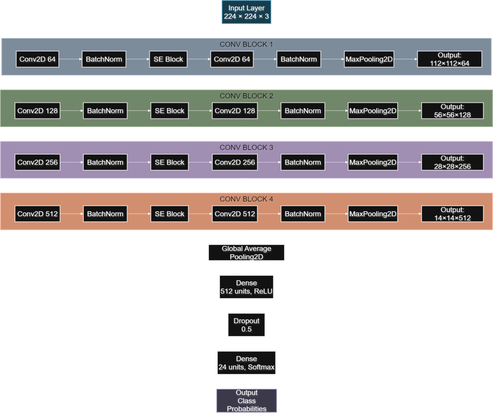

AI & ML Engineer · Medical Computer Vision · Chattogram, Bangladesh
I build and evaluate deep-learning systems for medical images and clinical data. I lead the AI system at WIOCARE, a live clinical platform in Bangladesh that analyses patients' medical reports and prescriptions, where I designed a dual-model validation pipeline and a fault-tolerant serving layer on Google Cloud.
My research interests are medical computer vision, 3D medical imaging (MRI/fMRI), evaluation methodology and data leakage in medical AI, attention mechanisms in CNNs, and efficient models for low-resource clinical settings. I am looking for a PhD position in these areas.

A 5.01M-parameter CNN trained from scratch with an SE block in each stage reaches 88.55% held-out accuracy (macro F1 0.888) on 24 classes of clinical skin photographs. A controlled ablation attributes about nine points of validation accuracy to SE attention for under 1% more parameters. The paper states its evaluation limits openly.
A methodological case study of how splitting fMRI data by frame rather than by subject leaks information between training and test sets in deep-learning classification of Alzheimer's disease, mild cognitive impairment and cognitively normal groups, and how to avoid it. Data were obtained from the Alzheimer's Disease Neuroimaging Initiative (ADNI) under its data use agreement.
AI system of a live clinical platform (Android, iOS, web): LLM dual-validation, 4–6 fallback models, retrieval-augmented clinical summaries, deployment on Google Cloud.
Predictive analytics tools for enterprise SaaS products.
Freelance IoT, web and machine-learning projects for local clients; taught programming.
Chattogram, Bangladesh. Medium of instruction: English.